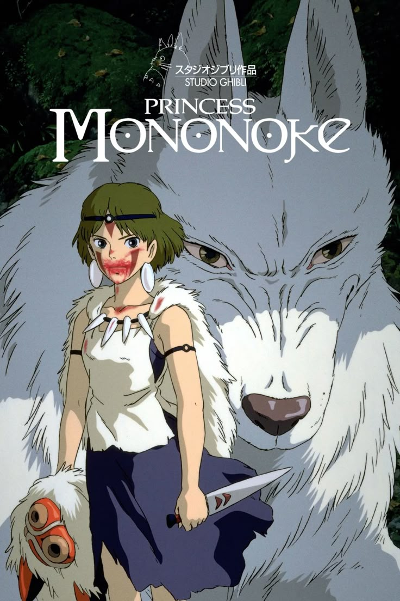
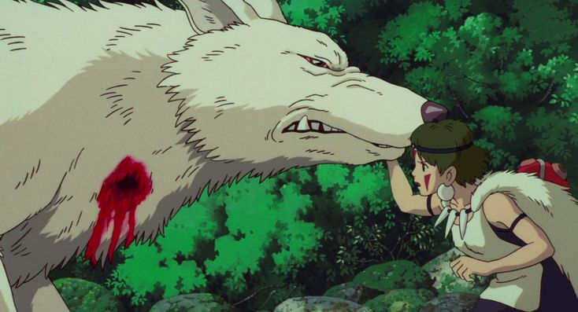
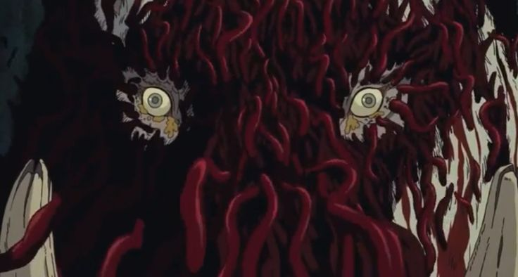
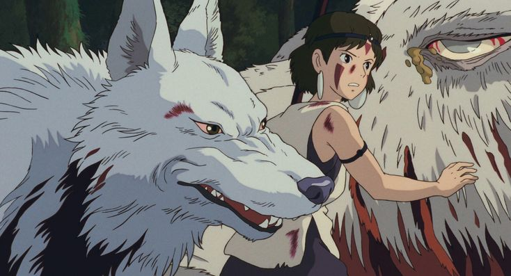
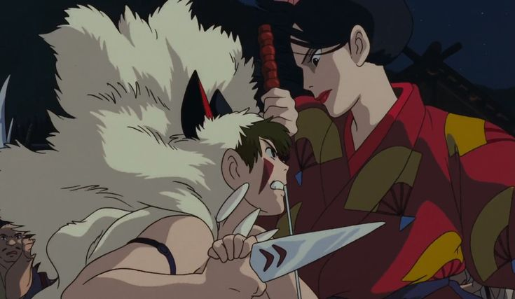
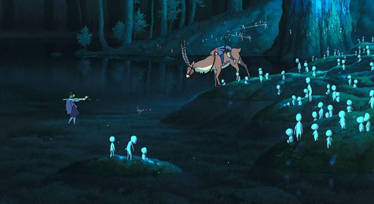
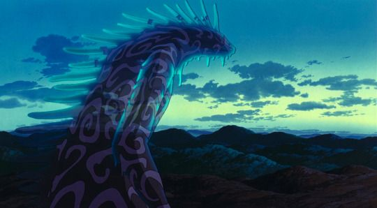

Princess Mononoke
Коли на село Еміші нападає лютий демон-кабан, молодий принц Ашітака ставить на карту своє життя, щоб захистити своє плем’я. Своїм передсмертним подихом звір проклинає руку принца, наділяючи його демонічними силами, поступово втрачаючи його життя. За дорученням старійшин села вирушити на захід за ліками, Ашітака прибуває до Татари, Залізного міста, де опиняється втягнутим у жорстокий конфлікт: пані Ебоші з Татари, яка сприяє постійній вирубці лісів, протистоїть принцесі Сан і священним духам лісу, які розлючені через руйнування, спричинене людьми. Коли протилежні сили природи та людства починають зіткнутися у відчайдушній боротьбі за виживання, Ашітака намагається знайти гармонію між ними, весь час борючись із прихованим демоном усередині нього






"Ти не можеш змінити долю, але ти можеш прийняти її."